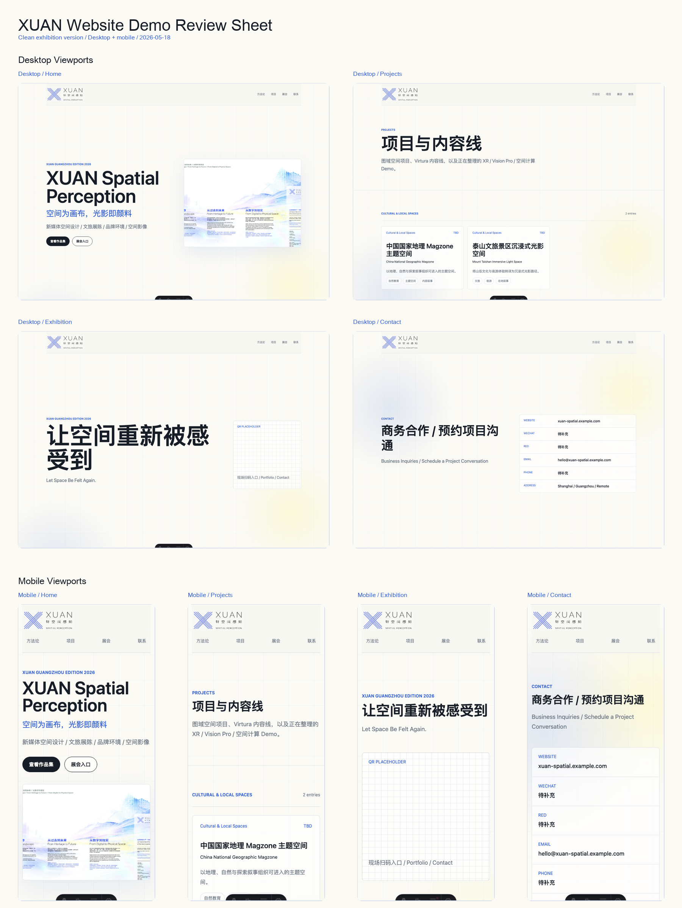
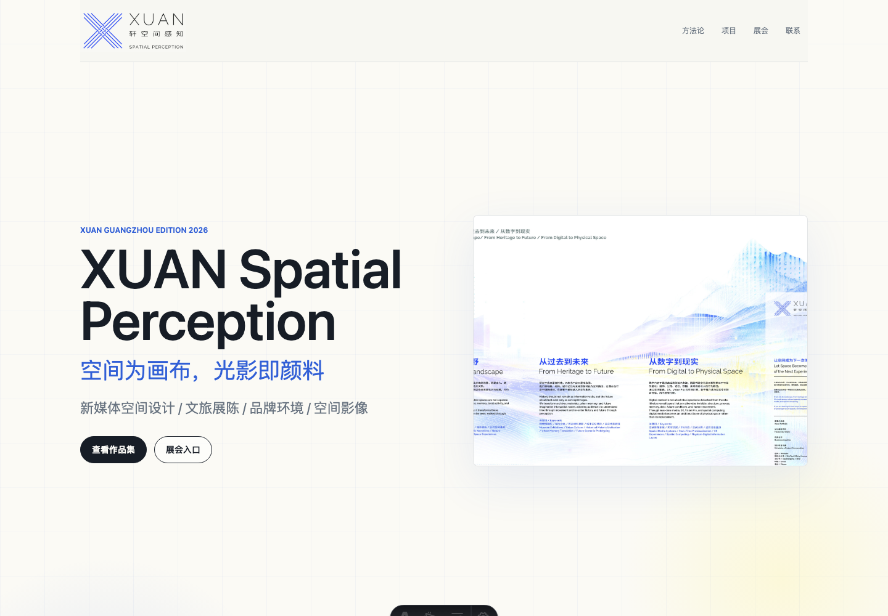
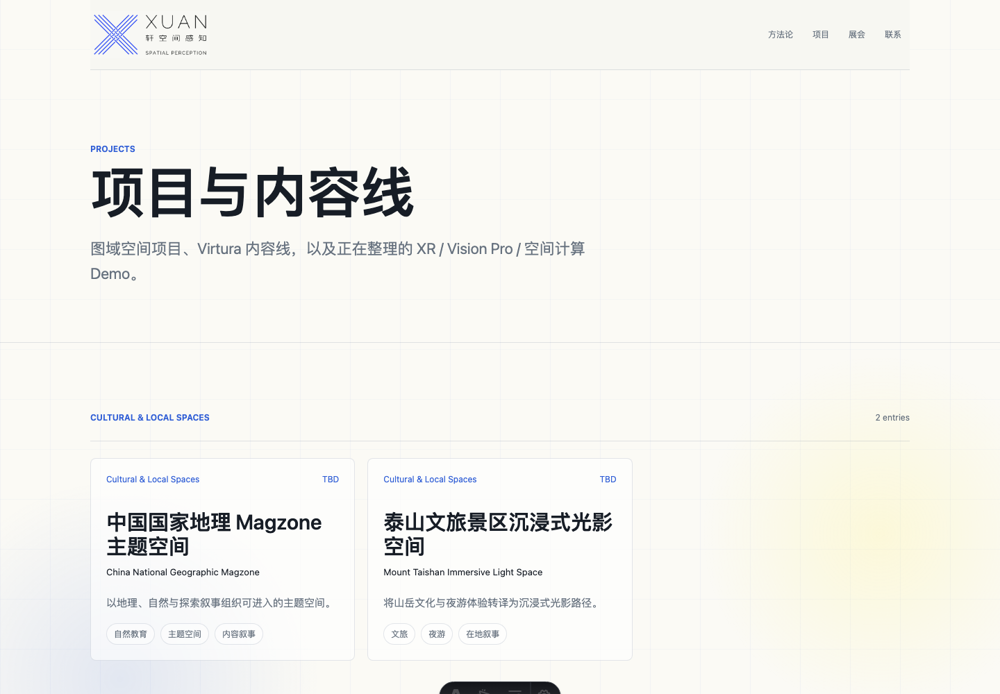
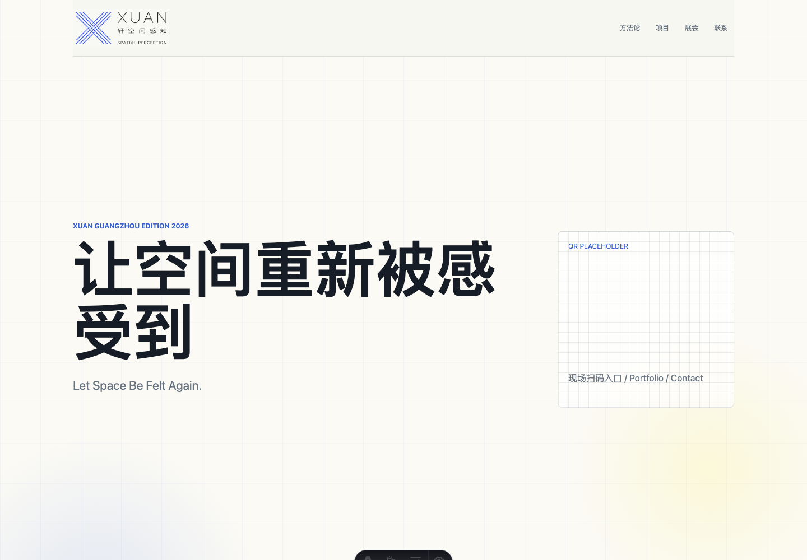
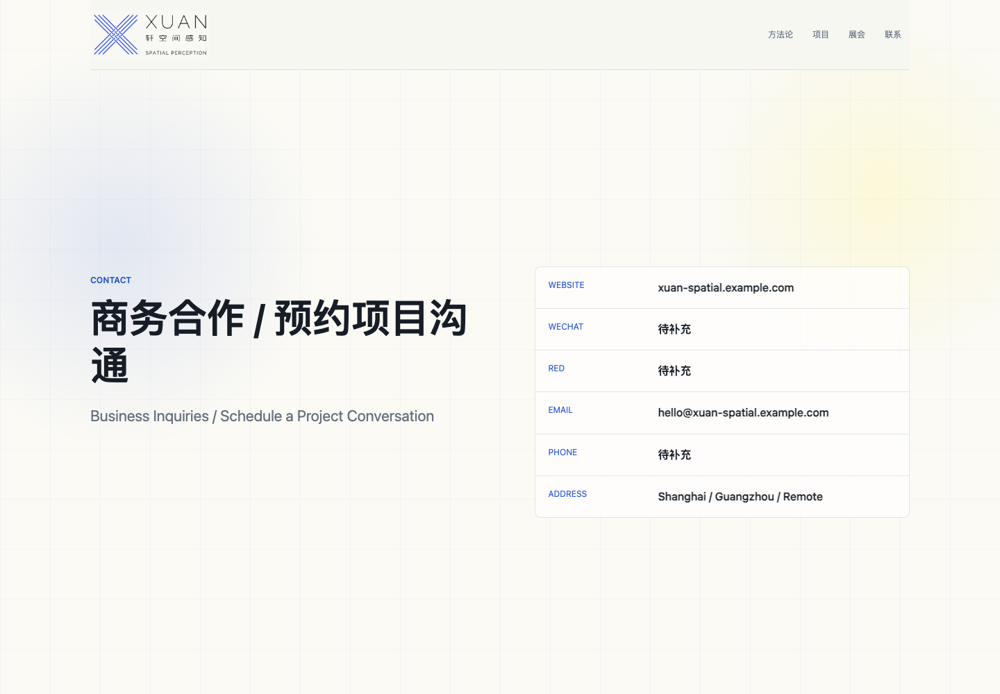
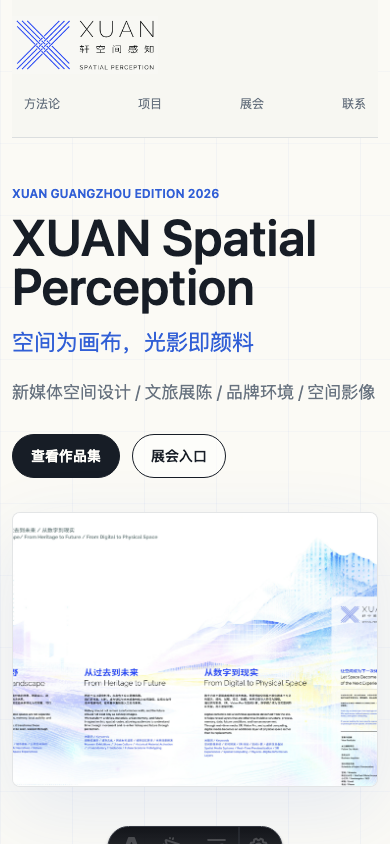
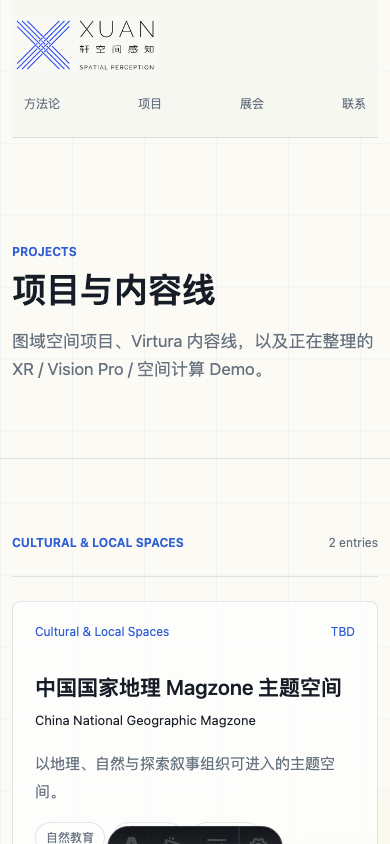
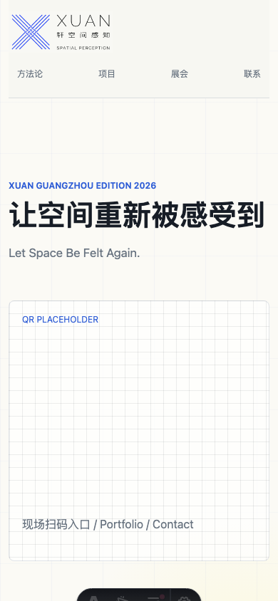
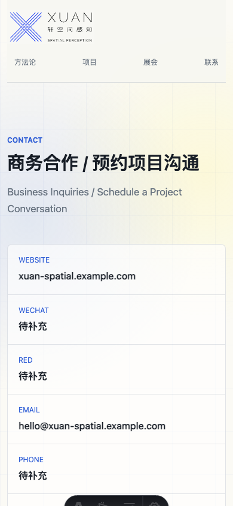

XUAN Website Demo Review Report
2026-05-18 / Local demo: http://localhost:4321/
Current State
Astro static website demo with home, projects, project details, methodology, exhibition, and contact pages. The direction references the provided exhibition wall artwork: light background, blue headline accents, pale yellow-blue spatial atmosphere, full temporary XUAN logo, smaller text scale, looser Chinese line-height, and shorter exhibition-facing copy.
Reference Order
- 展墙图文1.jpg: upper / wide wall layout reference.
- 展墙图文2.jpg: lower / pillar panel layout reference.
Overview Sheet

Desktop Screens




Mobile Screens




Notes
- Logo is temporary and should be replaced with final source artwork.
- Contact info, QR codes, public project visibility, and media assets still need confirmation.
- The site builds successfully to dist/ and is ready for Tencent CloudBase Hosting or COS static hosting after console access is confirmed.